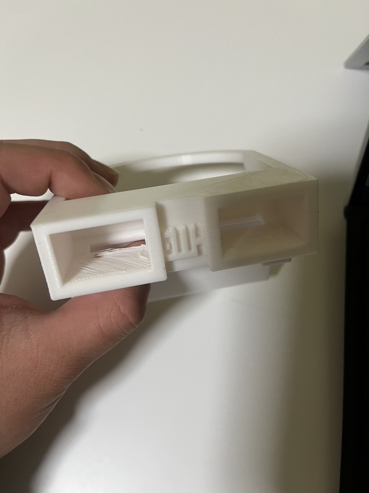
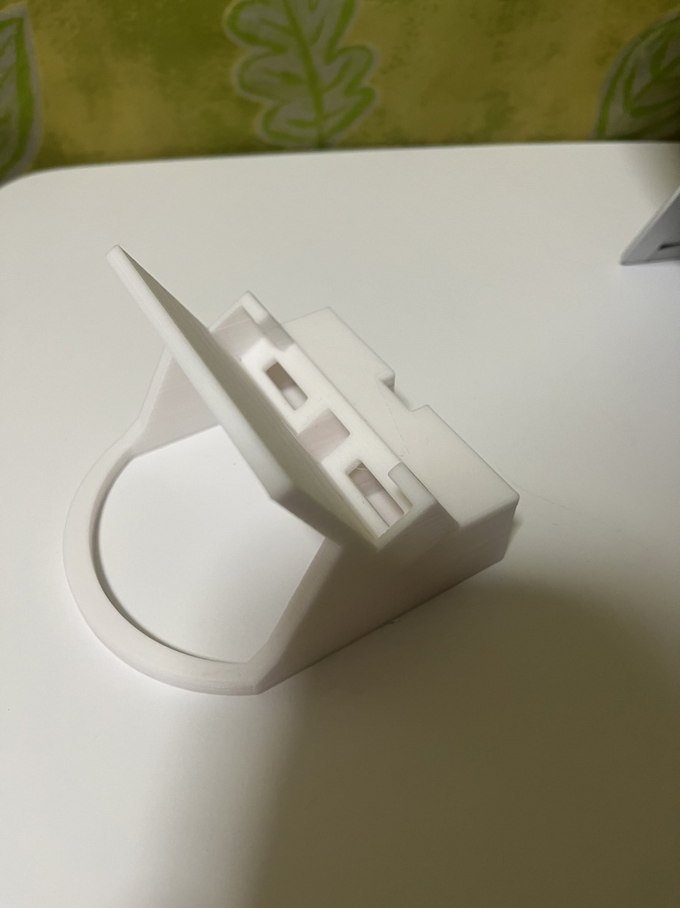
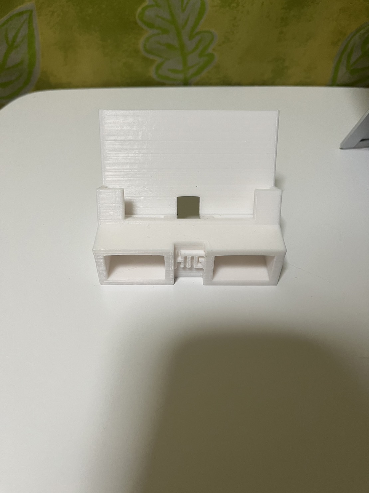
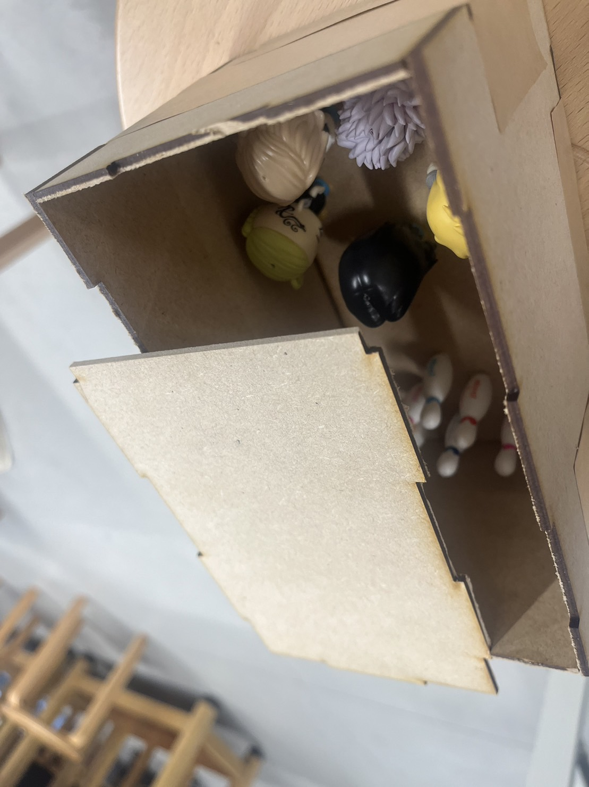
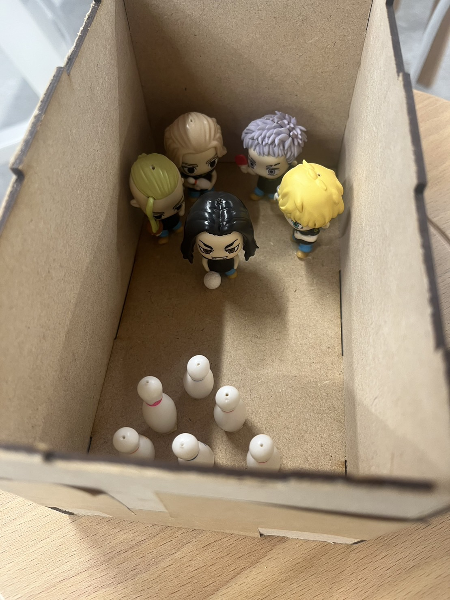
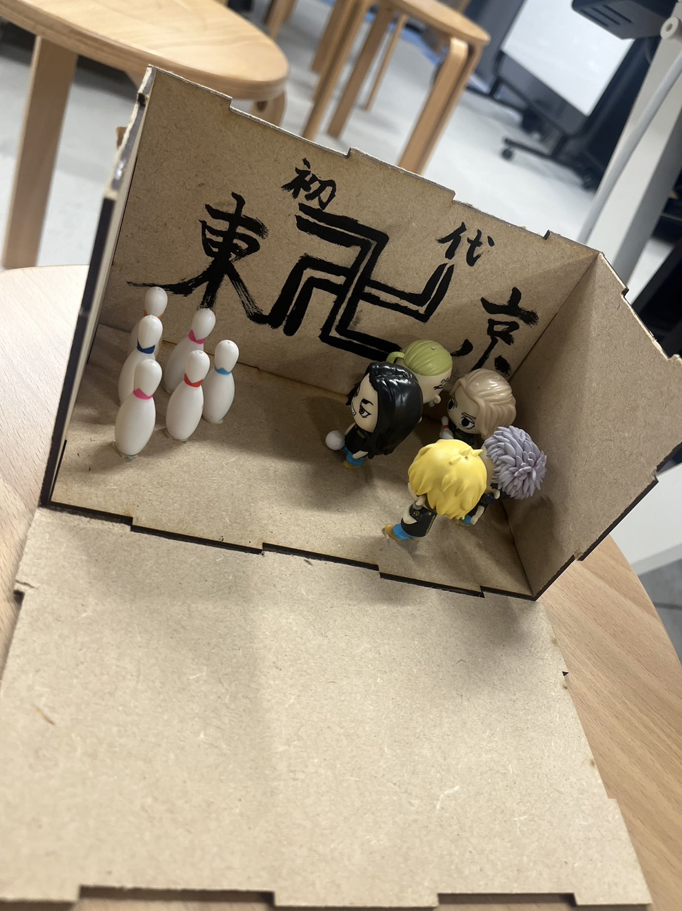
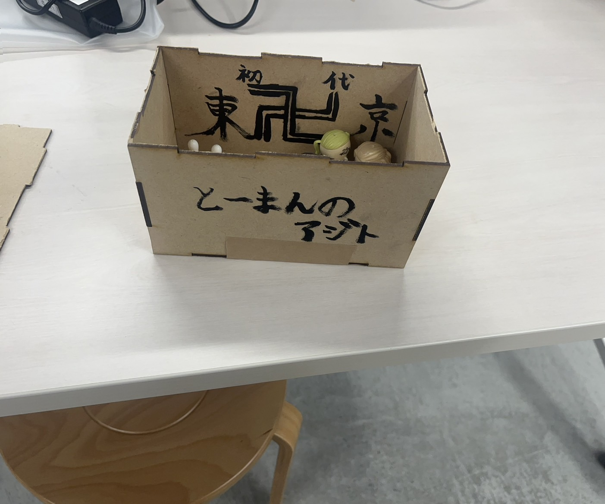

最終課題作品
1.スマホスピーカー
普段家で勉強をするときに音楽を流すことがあり、その時に音を大きくできるものを作ろうとしたのがきっかけです。
家にはBoseとBeatsのスピーカーがあるのですが父と弟が主に使用しているため、この機会に制作しようと思いました。
完成品
 
完成品を使用してみるとしっかり音が大きくなった。
2.ストラップを使用したジオラマ？
ラウンドワンに遊びに行ったときにキャンペーンでもらったストラップを活用して何か作りたいと思った。
そこでレーザーカッターで箱を作り、アジトを作ろうと思った。
完成品
 
 
3.映像
4.使用機材
3Dプリンター、レーザーカッター
参考サイト
MakerCase